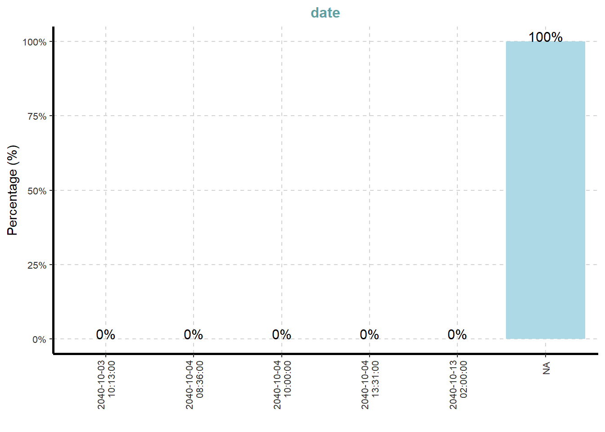
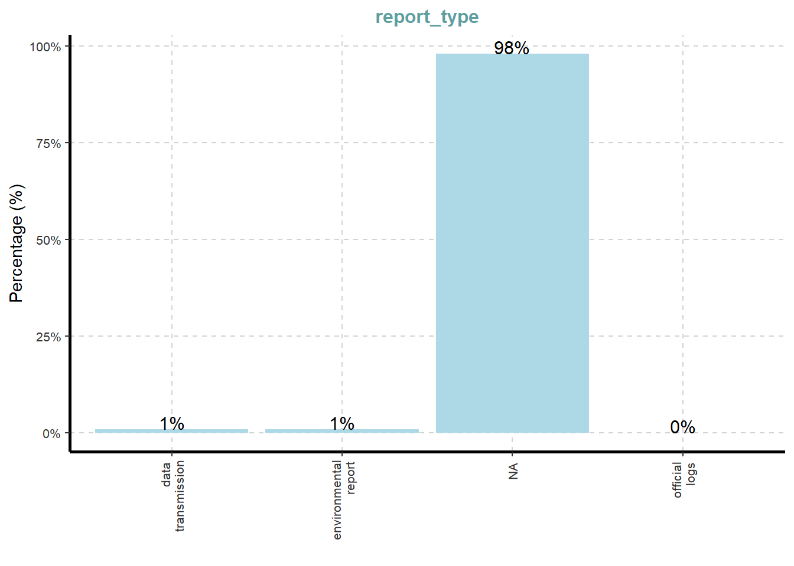

pacman::p_load(tidyverse, jsonlite, SmartEDA, tidygraph, ggraph, knitr, DT, stringr, cronologia, tidytext, dplyr)Take-home Exercise 2
1.1 Background
Over the past decade, the community of Oceanus has undergone transformations and challenges evolving from its fishing-centric origins. Currently, people are shifting to another investment, i.e. ocean tourism industry, which creates a growing tension. With the growing tourism, it attracted international pop star Sailor Shift who wanted to shoot his/her new music video in the island.
Clepper Jensen is a former analyst at FishEye company who is new a seasoned journalist for Hecklee Herald, is observing the tension and recently looking at temporary closure of Nemo Reef. By using investigative tools and radio communication, he uncovered a complex web of expedited approvals and secretive logistics, in which I will be helping him to develop visualization to help give better clarity to the story.
1.2 Objective
Objective of this exercise:
- Use visual analytics to help Clepper understand and explore the interactions and relationships between people and vessels that relates to environmentalism (known associates of Green Guardians), Sailor Shift, and fishing/leisure vessels.
- Nadia Conti was previously entangled in an illegal fishing scheme, it is suspected that she may have continued illegal activity within Oceanus, so we want to use visual analytics to provide evidence whether she’s doing something illegal.
1.3 The Data
1.4 Load Required Libraries
The libraries used in this exercise are the following:
| Package Name | Description |
|---|---|
| jsonlite | Convert JSON data to R objects |
| tidyverse | Provide key data transformation functions |
| SmartEDA | Help in getting the complete exploratory data analysis by running the function instead of writing long R codes |
| tidygraph | Provides tidy API for network or graph manipulation |
| ggraph | Extension of the ggplot2 API tailored to graph visualizations |
| knitr | Provides a tool for dynamic report generation |
| datable | Provides an R interface to the JavaScript library DataTables |
| stringr | Provides a cohesive set of functions designed to make working with strings easy |
| cronologia | HTML vertical timeline from a data frame as an input for ‘rmarkdown’ documents and ‘shiny’ applications |
1.5 Import Data
In this exercise, we’ll be using the mc3.json file and extract data using the jsonlite library.
MC3 <- fromJSON("data/MC3_graph.json")
MC3_schema <- fromJSON("data/MC3_schema.json")2.1 Inspect Knowledge Graph Structure
Before preparing the data, we’ll check the structure of the knowledge graph.
glimpse(MC3)List of 5
$ directed : logi TRUE
$ multigraph: logi FALSE
$ graph :List of 4
..$ mode : chr "static"
..$ edge_default: Named list()
..$ node_default: Named list()
..$ name : chr "VAST_MC3_Knowledge_Graph"
$ nodes :'data.frame': 1159 obs. of 31 variables:
..$ type : chr [1:1159] "Entity" "Entity" "Entity" "Entity" ...
..$ label : chr [1:1159] "Sam" "Kelly" "Nadia Conti" "Elise" ...
..$ name : chr [1:1159] "Sam" "Kelly" "Nadia Conti" "Elise" ...
..$ sub_type : chr [1:1159] "Person" "Person" "Person" "Person" ...
..$ id : chr [1:1159] "Sam" "Kelly" "Nadia Conti" "Elise" ...
..$ timestamp : chr [1:1159] NA NA NA NA ...
..$ monitoring_type : chr [1:1159] NA NA NA NA ...
..$ findings : chr [1:1159] NA NA NA NA ...
..$ content : chr [1:1159] NA NA NA NA ...
..$ assessment_type : chr [1:1159] NA NA NA NA ...
..$ results : chr [1:1159] NA NA NA NA ...
..$ movement_type : chr [1:1159] NA NA NA NA ...
..$ destination : chr [1:1159] NA NA NA NA ...
..$ enforcement_type : chr [1:1159] NA NA NA NA ...
..$ outcome : chr [1:1159] NA NA NA NA ...
..$ activity_type : chr [1:1159] NA NA NA NA ...
..$ participants : int [1:1159] NA NA NA NA NA NA NA NA NA NA ...
..$ thing_collected :'data.frame': 1159 obs. of 2 variables:
.. ..$ type: chr [1:1159] NA NA NA NA ...
.. ..$ name: chr [1:1159] NA NA NA NA ...
..$ reference : chr [1:1159] NA NA NA NA ...
..$ date : chr [1:1159] NA NA NA NA ...
..$ time : chr [1:1159] NA NA NA NA ...
..$ friendship_type : chr [1:1159] NA NA NA NA ...
..$ permission_type : chr [1:1159] NA NA NA NA ...
..$ start_date : chr [1:1159] NA NA NA NA ...
..$ end_date : chr [1:1159] NA NA NA NA ...
..$ report_type : chr [1:1159] NA NA NA NA ...
..$ submission_date : chr [1:1159] NA NA NA NA ...
..$ jurisdiction_type: chr [1:1159] NA NA NA NA ...
..$ authority_level : chr [1:1159] NA NA NA NA ...
..$ coordination_type: chr [1:1159] NA NA NA NA ...
..$ operational_role : chr [1:1159] NA NA NA NA ...
$ edges :'data.frame': 3226 obs. of 5 variables:
..$ id : chr [1:3226] "2" "3" "5" "3013" ...
..$ is_inferred: logi [1:3226] TRUE FALSE TRUE TRUE TRUE TRUE ...
..$ source : chr [1:3226] "Sam" "Sam" "Sam" "Sam" ...
..$ target : chr [1:3226] "Relationship_Suspicious_217" "Event_Communication_370" "Event_Assessment_600" "Relationship_Colleagues_430" ...
..$ type : chr [1:3226] NA "sent" NA NA ...Since the industry column is in list data type, we’’ exclude the column since list data type isn’t acceptable by tbl_graph().
2.2 Extract Edges and Nodes Tables
The as_tibble() function is used to extract nodes and links tibble data frame from MC3 tibble data frame.
mc3_nodes <- as_tibble(MC3$nodes)
mc3_edges <- as_tibble(MC3$edges)2.3 Initial EDA
We’ll use ExpCatViz() from SmartEDA library to reveal frequency distribution of all categorical fields from mc3_nodes.
ExpCatViz(data=mc3_nodes,
col="lightblue")[[1]]
[[2]]
[[3]]
[[4]]
[[5]]
[[6]]
[[7]]
[[8]]
[[9]]
[[10]]
[[11]]
[[12]]
[[13]]
[[14]]
2.4 Data Cleaning and Wrangling
The following steps are taken to clean the nodes:
Convert values in id into character data type
Exclude record with id that are missing
Exclude records with similar id values
Exclude thing_collected field
mc3_nodes_cleaned <- mc3_nodes %>%
mutate(id = as.character(id)) %>%
filter(!is.na(id)) %>%
distinct(id, .keep_all = TRUE) %>%
select(-thing_collected)Next, the following steps are taken to clean the edges:
Rename source column into from_id and target column into to_id
Convert values in from_id and to_id column into character data type
Exclude values in from_id and to_id that’s not found in the id column from mc3_nodes_cleaned
Exclude records where from_id and to_id, or from_id or to_id is missing
mc3_edges_cleaned <- mc3_edges %>%
rename(from_id = source,
to_id = target) %>%
mutate(across(c(from_id, to_id),
as.character)) %>%
filter(from_id %in% mc3_nodes_cleaned$id,
to_id %in% mc3_nodes_cleaned$id) %>%
filter(!is.na(from_id), !is.na(to_id))A new dataframe from the existing data frame (mc3_nodes_cleaned) and .row_id column is added which assigns unique row number to each row number (works like row index). Then we select id and .row_id columns whereas other columns are dropped.
node_index_lookup <- mc3_nodes_cleaned %>%
mutate(.row_id = row_number()) %>%
select(id, .row_id)Then from_id and to_id columns in mc_edges_indexed are converted it to integer indices. The rows with unmatched nodes are also dropped.
mc3_edges_indexed <- mc3_edges_cleaned %>%
left_join(node_index_lookup,
by = c("from_id" = "id")) %>%
rename(from = .row_id) %>%
left_join(node_index_lookup,
by = c("to_id" = "id")) %>%
rename(to = .row_id) %>%
select(from, to, is_inferred, type) %>%
filter(!is.na(from) & !is.na(to)) Next, the node list will only include nodes that are used in the edge list and new indices are assigned
used_node_indices <- sort(
unique(c(mc3_edges_indexed$from,
mc3_edges_indexed$to)))
mc3_nodes_final <- mc3_nodes_cleaned %>%
slice(used_node_indices) %>%
mutate(new_index = row_number())The lookup is rebuild from old index to new index.
old_to_new_index <- tibble(
old_index = used_node_indices,
new_index = seq_along(
used_node_indices))Then, we’ll update edge indices to match new node table
mc3_edges_final <- mc3_edges_indexed %>%
left_join(old_to_new_index,
by = c("from" = "old_index")) %>%
rename(from_new = new_index) %>%
left_join(old_to_new_index,
by = c("to" = "old_index")) %>%
rename(to_new = new_index) %>%
select(from = from_new, to = to_new,
is_inferred, type)2.5 Build tidygraph Object
Next, we’ll build the tidygraph object
mc3_graph <- tbl_graph(
nodes = mc3_nodes_final,
edges = mc3_edges_final,
directed = TRUE
)str(mc3_graph)Classes 'tbl_graph', 'igraph' hidden list of 10
$ : num 1159
$ : logi TRUE
$ : num [1:3226] 0 0 0 0 0 0 0 1 1 1 ...
$ : num [1:3226] 1137 356 746 894 875 ...
$ : NULL
$ : NULL
$ : NULL
$ : NULL
$ :List of 4
..$ : num [1:3] 1 0 1
..$ : Named list()
..$ :List of 31
.. ..$ type : chr [1:1159] "Entity" "Entity" "Entity" "Entity" ...
.. ..$ label : chr [1:1159] "Sam" "Kelly" "Nadia Conti" "Elise" ...
.. ..$ name : chr [1:1159] "Sam" "Kelly" "Nadia Conti" "Elise" ...
.. ..$ sub_type : chr [1:1159] "Person" "Person" "Person" "Person" ...
.. ..$ id : chr [1:1159] "Sam" "Kelly" "Nadia Conti" "Elise" ...
.. ..$ timestamp : chr [1:1159] NA NA NA NA ...
.. ..$ monitoring_type : chr [1:1159] NA NA NA NA ...
.. ..$ findings : chr [1:1159] NA NA NA NA ...
.. ..$ content : chr [1:1159] NA NA NA NA ...
.. ..$ assessment_type : chr [1:1159] NA NA NA NA ...
.. ..$ results : chr [1:1159] NA NA NA NA ...
.. ..$ movement_type : chr [1:1159] NA NA NA NA ...
.. ..$ destination : chr [1:1159] NA NA NA NA ...
.. ..$ enforcement_type : chr [1:1159] NA NA NA NA ...
.. ..$ outcome : chr [1:1159] NA NA NA NA ...
.. ..$ activity_type : chr [1:1159] NA NA NA NA ...
.. ..$ participants : int [1:1159] NA NA NA NA NA NA NA NA NA NA ...
.. ..$ reference : chr [1:1159] NA NA NA NA ...
.. ..$ date : chr [1:1159] NA NA NA NA ...
.. ..$ time : chr [1:1159] NA NA NA NA ...
.. ..$ friendship_type : chr [1:1159] NA NA NA NA ...
.. ..$ permission_type : chr [1:1159] NA NA NA NA ...
.. ..$ start_date : chr [1:1159] NA NA NA NA ...
.. ..$ end_date : chr [1:1159] NA NA NA NA ...
.. ..$ report_type : chr [1:1159] NA NA NA NA ...
.. ..$ submission_date : chr [1:1159] NA NA NA NA ...
.. ..$ jurisdiction_type: chr [1:1159] NA NA NA NA ...
.. ..$ authority_level : chr [1:1159] NA NA NA NA ...
.. ..$ coordination_type: chr [1:1159] NA NA NA NA ...
.. ..$ operational_role : chr [1:1159] NA NA NA NA ...
.. ..$ new_index : int [1:1159] 1 2 3 4 5 6 7 8 9 10 ...
..$ :List of 2
.. ..$ is_inferred: logi [1:3226] TRUE FALSE TRUE TRUE TRUE TRUE ...
.. ..$ type : chr [1:3226] NA "sent" NA NA ...
$ :<environment: 0x000001db8b2a2c48>
- attr(*, "active")= chr "nodes"2.6 Visualize Knowledge Graph
Next, we’ll set a seed to ensure reproducibility.
set.seed(1234)ggraph(mc3_graph,
layout = "fr") +
geom_edge_link(alpha = 0.3,
colour = "gray") +
geom_node_point(aes(color = `type`),
size = 4) +
geom_node_text(aes(label = type),
repel = TRUE,
size = 2.5) +
theme_void()
3.1 Objective #1: Visualize Groups based on the Topics Frequently Brought Up in Their Exchanges
Visualize the Subgraph
A table is generated to see the distinct people, organization and groups whose radio communication Clepper has intercepted.
all_nodes <- mc3_graph %>%
activate(nodes) %>%
as_tibble()
# Filter by sub_type
persons <- all_nodes %>%
filter(sub_type == "Person") %>%
select(name) %>%
rename(Person = name)
organizations <- all_nodes %>%
filter(sub_type == "Organization") %>%
select(name) %>%
rename(Organization = name)
groups <- all_nodes %>%
filter(sub_type == "Group") %>%
select(name) %>%
rename(Group = name)
max_len <- max(nrow(persons), nrow(organizations), nrow(groups))
table_combined <- tibble(
Person = c(persons$Person, rep(NA, max_len - nrow(persons))),
Organization = c(organizations$Organization, rep(NA, max_len - nrow(organizations))),
Group = c(groups$Group, rep(NA, max_len - nrow(groups)))
)
datatable(table_combined)Next, we’ll combine all the people, groups and organizations to check what are the people/organization/groups each individuals talk about or talk to:
people <- c(persons$Person, groups$Group, organizations$Organization)
people [1] "Sam" "Kelly"
[3] "Nadia Conti" "Elise"
[5] "Liam Thorne" "Samantha Blake"
[7] "Davis" "Rodriguez"
[9] "Sailor Shift" "Clepper Jensen"
[11] "Miranda Jordan" "The Intern"
[13] "The Lookout" "The Accountant"
[15] "Mrs. Money" "The Middleman"
[17] "Boss" "Small Fry"
[19] "Recreational Fishing Boats" "City Officials"
[21] "Diving Tour Operators" "Tourists"
[23] "Conservation Vessels" "Glitters Team"
[25] "Oceanus City Council" "Green Guardians"
[27] "V. Miesel Shipping" "Sailor Shifts Team" persons <- all_nodes %>%
filter(sub_type == "Person") %>%
select(name, new_index)
persons# A tibble: 18 × 2
name new_index
<chr> <int>
1 Sam 1
2 Kelly 2
3 Nadia Conti 3
4 Elise 4
5 Liam Thorne 5
6 Samantha Blake 6
7 Davis 7
8 Rodriguez 8
9 Sailor Shift 9
10 Clepper Jensen 10
11 Miranda Jordan 11
12 The Intern 12
13 The Lookout 13
14 The Accountant 14
15 Mrs. Money 15
16 The Middleman 16
17 Boss 17
18 Small Fry 18sam_content <- mc3_graph %>%
activate(edges) %>%
filter(from == "1"|to == "1")
used_node_sam <- sam_content %>%
activate(edges) %>%
as_tibble() %>%
select(from, to) %>%
unlist() %>%
unique()connected_node_content_sam <- mc3_graph %>%
activate(nodes) %>%
as_tibble() %>%
filter(new_index %in% used_node_sam) %>%
select(name, sub_type, content)all_text_sam <- connected_node_content_sam %>%
filter(!is.na(content)) %>%
summarise(full_text = paste(content, collapse = " "))
text_clean_sam <- connected_node_content_sam %>%
filter(!is.na(content)) %>%
summarise(full_text = paste(content, collapse = " ")) %>%
mutate(full_text = str_to_lower(full_text),
full_text = str_replace_all(full_text, "[^a-z\\s]", ""),
full_text = str_squish(full_text))people_clean <- str_to_lower(people) %>%
str_replace_all("[^a-z\\s]", "") %>%
str_squish()
name_freq_sam <- tibble(name = people, clean_name = people_clean) %>%
rowwise() %>%
mutate(freq = str_count(text_clean_sam$full_text, fixed(clean_name))) %>%
arrange(desc(freq))
name_freq_sam# A tibble: 28 × 3
# Rowwise:
name clean_name freq
<chr> <chr> <int>
1 The Lookout the lookout 8
2 Sam sam 4
3 Conservation Vessels conservation vessels 4
4 Kelly kelly 3
5 Elise elise 1
6 Nadia Conti nadia conti 0
7 Liam Thorne liam thorne 0
8 Samantha Blake samantha blake 0
9 Davis davis 0
10 Rodriguez rodriguez 0
# ℹ 18 more rowsSam seem to talk to or about these people: the Lookout, the Conservation Vessel, Kelly and Elise.
kelly_content <- mc3_graph %>%
activate(edges) %>%
filter(from == "2"|to == "2")
used_node_kelly <- kelly_content %>%
activate(edges) %>%
as_tibble() %>%
select(from, to) %>%
unlist() %>%
unique()connected_node_content_kelly <- mc3_graph %>%
activate(nodes) %>%
as_tibble() %>%
filter(new_index %in% used_node_kelly) %>%
select(name, sub_type, content)all_text_kelly <- connected_node_content_kelly %>%
filter(!is.na(content)) %>%
summarise(full_text = paste(content, collapse = " "))
text_clean_kelly <- connected_node_content_kelly %>%
filter(!is.na(content)) %>%
summarise(full_text = paste(content, collapse = " ")) %>%
mutate(full_text = str_to_lower(full_text),
full_text = str_replace_all(full_text, "[^a-z\\s]", ""),
full_text = str_squish(full_text))name_freq_kelly <- tibble(name = people, clean_name = people_clean) %>%
rowwise() %>%
mutate(freq = str_count(text_clean_kelly$full_text, fixed(clean_name))) %>%
arrange(desc(freq))
name_freq_kelly# A tibble: 28 × 3
# Rowwise:
name clean_name freq
<chr> <chr> <int>
1 Sam sam 3
2 Kelly kelly 3
3 Elise elise 1
4 Nadia Conti nadia conti 0
5 Liam Thorne liam thorne 0
6 Samantha Blake samantha blake 0
7 Davis davis 0
8 Rodriguez rodriguez 0
9 Sailor Shift sailor shift 0
10 Clepper Jensen clepper jensen 0
# ℹ 18 more rowsnadia_contents <- mc3_graph %>%
activate(edges) %>%
filter(from == "3"|to == "3")
used_node_nadia <- nadia_contents %>%
activate(edges) %>%
as_tibble() %>%
select(from, to) %>%
unlist() %>%
unique()connected_node_content_nadia <- mc3_graph %>%
activate(nodes) %>%
as_tibble() %>%
filter(new_index %in% used_node_nadia) %>%
select(name, sub_type, content)all_text_nadia <- connected_node_content_nadia %>%
filter(!is.na(content)) %>%
summarise(full_text = paste(content, collapse = " "))
all_text_nadia# A tibble: 1 × 1
full_text
<chr>
1 Haacklee Harbor to Nadia Conti. Following your visit yesterday regarding the …text_clean_nadia <- connected_node_content_nadia %>%
filter(!is.na(content)) %>%
summarise(full_text = paste(content, collapse = " ")) %>%
mutate(full_text = str_to_lower(full_text),
full_text = str_replace_all(full_text, "[^a-z\\s]", ""),
full_text = str_squish(full_text))name_freq_nadia<- tibble(name = people, clean_name = people_clean) %>%
rowwise() %>%
mutate(freq = str_count(text_clean_nadia$full_text, fixed(clean_name))) %>%
arrange(desc(freq))
name_freq_nadia# A tibble: 28 × 3
# Rowwise:
name clean_name freq
<chr> <chr> <int>
1 Davis davis 8
2 Elise elise 4
3 Sam sam 3
4 Nadia Conti nadia conti 3
5 Sailor Shift sailor shift 2
6 The Middleman the middleman 2
7 Conservation Vessels conservation vessels 2
8 V. Miesel Shipping v miesel shipping 2
9 Rodriguez rodriguez 1
10 The Accountant the accountant 1
# ℹ 18 more rowselise_contents <- mc3_graph %>%
activate(edges) %>%
filter(from == "4"|to == "4")
used_node_elise <- elise_contents %>%
activate(edges) %>%
as_tibble() %>%
select(from, to) %>%
unlist() %>%
unique()connected_node_content_elise <- mc3_graph %>%
activate(nodes) %>%
as_tibble() %>%
filter(new_index %in% used_node_elise) %>%
select(name, sub_type, content)all_text_elise <- connected_node_content_elise %>%
filter(!is.na(content)) %>%
summarise(full_text = paste(content, collapse = " "))
all_text_elise# A tibble: 1 × 1
full_text
<chr>
1 Neptune captain here. Elise, we're ready for your arrival at 0500 tomorrow. N…text_clean_elise <- connected_node_content_elise %>%
filter(!is.na(content)) %>%
summarise(full_text = paste(content, collapse = " ")) %>%
mutate(full_text = str_to_lower(full_text),
full_text = str_replace_all(full_text, "[^a-z\\s]", ""),
full_text = str_squish(full_text))name_freq_elise <- tibble(name = people, clean_name = people_clean) %>%
rowwise() %>%
mutate(freq = str_count(text_clean_elise$full_text, fixed(clean_name))) %>%
arrange(desc(freq))
name_freq_elise# A tibble: 28 × 3
# Rowwise:
name clean_name freq
<chr> <chr> <int>
1 Elise elise 11
2 Sam sam 3
3 Conservation Vessels conservation vessels 2
4 V. Miesel Shipping v miesel shipping 2
5 Kelly kelly 0
6 Nadia Conti nadia conti 0
7 Liam Thorne liam thorne 0
8 Samantha Blake samantha blake 0
9 Davis davis 0
10 Rodriguez rodriguez 0
# ℹ 18 more rowsliam_contents <- mc3_graph %>%
activate(edges) %>%
filter(from == "5"|to == "5")
used_node_liam <- liam_contents %>%
activate(edges) %>%
as_tibble() %>%
select(from, to) %>%
unlist() %>%
unique()connected_node_content_liam <- mc3_graph %>%
activate(nodes) %>%
as_tibble() %>%
filter(new_index %in% used_node_liam) %>%
select(name, sub_type, content)all_text_liam <- connected_node_content_liam %>%
filter(!is.na(content)) %>%
summarise(full_text = paste(content, collapse = " "))
all_text_nadia# A tibble: 1 × 1
full_text
<chr>
1 Haacklee Harbor to Nadia Conti. Following your visit yesterday regarding the …text_clean_liam <- connected_node_content_liam %>%
filter(!is.na(content)) %>%
summarise(full_text = paste(content, collapse = " ")) %>%
mutate(full_text = str_to_lower(full_text),
full_text = str_replace_all(full_text, "[^a-z\\s]", ""),
full_text = str_squish(full_text))name_freq_liam <- tibble(name = people, clean_name = people_clean) %>%
rowwise() %>%
mutate(freq = str_count(text_clean_liam$full_text, fixed(clean_name))) %>%
arrange(desc(freq))
name_freq_liam# A tibble: 28 × 3
# Rowwise:
name clean_name freq
<chr> <chr> <int>
1 Oceanus City Council oceanus city council 8
2 Liam Thorne liam thorne 6
3 Sam sam 5
4 Conservation Vessels conservation vessels 3
5 V. Miesel Shipping v miesel shipping 3
6 Elise elise 2
7 Mrs. Money mrs money 2
8 The Middleman the middleman 2
9 Green Guardians green guardians 2
10 Boss boss 1
# ℹ 18 more rowssamantha_contents <- mc3_graph %>%
activate(edges) %>%
filter(from == "6"|to == "6")
used_node_samantha <- samantha_contents %>%
activate(edges) %>%
as_tibble() %>%
select(from, to) %>%
unlist() %>%
unique()connected_node_content_samantha <- mc3_graph %>%
activate(nodes) %>%
as_tibble() %>%
filter(new_index %in% used_node_samantha) %>%
select(name, sub_type, content)all_text_samantha <- connected_node_content_samantha %>%
filter(!is.na(content)) %>%
summarise(full_text = paste(content, collapse = " "))
text_clean_samatha <- connected_node_content_samantha %>%
filter(!is.na(content)) %>%
summarise(full_text = paste(content, collapse = " ")) %>%
mutate(full_text = str_to_lower(full_text),
full_text = str_replace_all(full_text, "[^a-z\\s]", ""),
full_text = str_squish(full_text))name_freq_samantha <- tibble(name = people, clean_name = people_clean) %>%
rowwise() %>%
mutate(freq = str_count(text_clean_samatha$full_text, fixed(clean_name))) %>%
arrange(desc(freq))
name_freq_samantha# A tibble: 28 × 3
# Rowwise:
name clean_name freq
<chr> <chr> <int>
1 Sam sam 15
2 Samantha Blake samantha blake 9
3 Oceanus City Council oceanus city council 5
4 Sailor Shift sailor shift 3
5 Sailor Shifts Team sailor shifts team 3
6 Boss boss 1
7 Glitters Team glitters team 1
8 Kelly kelly 0
9 Nadia Conti nadia conti 0
10 Elise elise 0
# ℹ 18 more rowsdavis_contents <- mc3_graph %>%
activate(edges) %>%
filter(from == "7"|to == "7")
used_node_davis <- davis_contents %>%
activate(edges) %>%
as_tibble() %>%
select(from, to) %>%
unlist() %>%
unique()connected_node_content_davis <- mc3_graph %>%
activate(nodes) %>%
as_tibble() %>%
filter(new_index %in% used_node_davis) %>%
select(name, sub_type, content)all_text_davis <- connected_node_content_davis %>%
filter(!is.na(content)) %>%
summarise(full_text = paste(content, collapse = " "))
text_clean_davis <- connected_node_content_davis %>%
filter(!is.na(content)) %>%
summarise(full_text = paste(content, collapse = " ")) %>%
mutate(full_text = str_to_lower(full_text),
full_text = str_replace_all(full_text, "[^a-z\\s]", ""),
full_text = str_squish(full_text))name_freq_davis <- tibble(name = people, clean_name = people_clean) %>%
rowwise() %>%
mutate(freq = str_count(text_clean_davis$full_text, fixed(clean_name))) %>%
arrange(desc(freq))
name_freq_davis# A tibble: 28 × 3
# Rowwise:
name clean_name freq
<chr> <chr> <int>
1 Davis davis 37
2 Rodriguez rodriguez 5
3 Boss boss 5
4 Conservation Vessels conservation vessels 3
5 V. Miesel Shipping v miesel shipping 3
6 Small Fry small fry 2
7 Nadia Conti nadia conti 1
8 The Middleman the middleman 1
9 Sam sam 0
10 Kelly kelly 0
# ℹ 18 more rowsrodriquez_contents <- mc3_graph %>%
activate(edges) %>%
filter(from == "8"|to == "8")
used_node_rodriquez <- rodriquez_contents %>%
activate(edges) %>%
as_tibble() %>%
select(from, to) %>%
unlist() %>%
unique()connected_node_content_rodriquez <- mc3_graph %>%
activate(nodes) %>%
as_tibble() %>%
filter(new_index %in% used_node_rodriquez) %>%
select(name, sub_type, content)all_text_rodriquez <- connected_node_content_rodriquez %>%
filter(!is.na(content)) %>%
summarise(full_text = paste(content, collapse = " "))
all_text_rodriquez# A tibble: 1 × 1
full_text
<chr>
1 Rodriguez, Mako here. Currently docked at Himark Harbor slip #14. Davis menti…text_clean_rodriquez <- connected_node_content_rodriquez %>%
filter(!is.na(content)) %>%
summarise(full_text = paste(content, collapse = " ")) %>%
mutate(full_text = str_to_lower(full_text),
full_text = str_replace_all(full_text, "[^a-z\\s]", ""),
full_text = str_squish(full_text))name_freq_rodriquez <- tibble(name = people, clean_name = people_clean) %>%
rowwise() %>%
mutate(freq = str_count(text_clean_rodriquez$full_text, fixed(clean_name))) %>%
arrange(desc(freq))
name_freq_rodriquez# A tibble: 28 × 3
# Rowwise:
name clean_name freq
<chr> <chr> <int>
1 Rodriguez rodriguez 16
2 Davis davis 8
3 Nadia Conti nadia conti 2
4 Boss boss 2
5 Conservation Vessels conservation vessels 2
6 Sailor Shift sailor shift 1
7 Mrs. Money mrs money 1
8 Sam sam 0
9 Kelly kelly 0
10 Elise elise 0
# ℹ 18 more rowssailor_contents <- mc3_graph %>%
activate(edges) %>%
filter(from == "9"|to == "9")
used_node_sailor <- sailor_contents %>%
activate(edges) %>%
as_tibble() %>%
select(from, to) %>%
unlist() %>%
unique()connected_node_content_sailor <- mc3_graph %>%
activate(nodes) %>%
as_tibble() %>%
filter(new_index %in% used_node_sailor) %>%
select(name, sub_type, content)all_text_sailor <- connected_node_content_sailor %>%
filter(!is.na(content)) %>%
summarise(full_text = paste(content, collapse = " "))
all_text_sailor# A tibble: 1 × 1
full_text
<chr>
1 "" text_clean_sailor <- connected_node_content_sailor %>%
filter(!is.na(content)) %>%
summarise(full_text = paste(content, collapse = " ")) %>%
mutate(full_text = str_to_lower(full_text),
full_text = str_replace_all(full_text, "[^a-z\\s]", ""),
full_text = str_squish(full_text))name_freq_sailor <- tibble(name = people, clean_name = people_clean) %>%
rowwise() %>%
mutate(freq = str_count(text_clean_sailor$full_text, fixed(clean_name))) %>%
arrange(desc(freq))
name_freq_sailor# A tibble: 28 × 3
# Rowwise:
name clean_name freq
<chr> <chr> <int>
1 Sam sam 0
2 Kelly kelly 0
3 Nadia Conti nadia conti 0
4 Elise elise 0
5 Liam Thorne liam thorne 0
6 Samantha Blake samantha blake 0
7 Davis davis 0
8 Rodriguez rodriguez 0
9 Sailor Shift sailor shift 0
10 Clepper Jensen clepper jensen 0
# ℹ 18 more rowsclepper_contents <- mc3_graph %>%
activate(edges) %>%
filter(from == "10"|to == "10")
used_node_clepper <- clepper_contents %>%
activate(edges) %>%
as_tibble() %>%
select(from, to) %>%
unlist() %>%
unique()connected_node_content_clepper <- mc3_graph %>%
activate(nodes) %>%
as_tibble() %>%
filter(new_index %in% used_node_clepper) %>%
select(name, sub_type, content)all_text_clepper <- connected_node_content_clepper %>%
filter(!is.na(content)) %>%
summarise(full_text = paste(content, collapse = " "))
all_text_clepper# A tibble: 1 × 1
full_text
<chr>
1 Mr. Jensen, this is Miranda. I've been observing unusual activity at Nemo Ree…text_clean_clepper <- connected_node_content_clepper %>%
filter(!is.na(content)) %>%
summarise(full_text = paste(content, collapse = " ")) %>%
mutate(full_text = str_to_lower(full_text),
full_text = str_replace_all(full_text, "[^a-z\\s]", ""),
full_text = str_squish(full_text))name_freq_clepper <- tibble(name = people, clean_name = people_clean) %>%
rowwise() %>%
mutate(freq = str_count(text_clean_clepper$full_text, fixed(clean_name))) %>%
arrange(desc(freq))
name_freq_clepper# A tibble: 28 × 3
# Rowwise:
name clean_name freq
<chr> <chr> <int>
1 Rodriguez rodriguez 10
2 Conservation Vessels conservation vessels 9
3 Sam sam 5
4 V. Miesel Shipping v miesel shipping 3
5 Sailor Shift sailor shift 2
6 Oceanus City Council oceanus city council 2
7 Sailor Shifts Team sailor shifts team 2
8 Kelly kelly 0
9 Nadia Conti nadia conti 0
10 Elise elise 0
# ℹ 18 more rowsmiranda_contents <- mc3_graph %>%
activate(edges) %>%
filter(from == "11"|to == "11")
used_node_miranda <- miranda_contents %>%
activate(edges) %>%
as_tibble() %>%
select(from, to) %>%
unlist() %>%
unique()connected_node_content_miranda <- mc3_graph %>%
activate(nodes) %>%
as_tibble() %>%
filter(new_index %in% used_node_miranda) %>%
select(name, sub_type, content)all_text_miranda <- connected_node_content_miranda %>%
filter(!is.na(content)) %>%
summarise(full_text = paste(content, collapse = " "))
all_text_miranda# A tibble: 1 × 1
full_text
<chr>
1 Mr. Jensen, this is Miranda. I've been observing unusual activity at Nemo Ree…text_clean_miranda <- connected_node_content_miranda %>%
filter(!is.na(content)) %>%
summarise(full_text = paste(content, collapse = " ")) %>%
mutate(full_text = str_to_lower(full_text),
full_text = str_replace_all(full_text, "[^a-z\\s]", ""),
full_text = str_squish(full_text))name_freq_miranda <- tibble(name = people, clean_name = people_clean) %>%
rowwise() %>%
mutate(freq = str_count(text_clean_miranda$full_text, fixed(clean_name))) %>%
arrange(desc(freq))
name_freq_miranda# A tibble: 28 × 3
# Rowwise:
name clean_name freq
<chr> <chr> <int>
1 Rodriguez rodriguez 10
2 Conservation Vessels conservation vessels 9
3 Sam sam 5
4 V. Miesel Shipping v miesel shipping 3
5 Sailor Shift sailor shift 2
6 Oceanus City Council oceanus city council 2
7 Sailor Shifts Team sailor shifts team 2
8 Kelly kelly 0
9 Nadia Conti nadia conti 0
10 Elise elise 0
# ℹ 18 more rowsintern_contents <- mc3_graph %>%
activate(edges) %>%
filter(from == "12"|to == "12")
used_node_intern <- intern_contents %>%
activate(edges) %>%
as_tibble() %>%
select(from, to) %>%
unlist() %>%
unique()connected_node_content_intern <- mc3_graph %>%
activate(nodes) %>%
as_tibble() %>%
filter(new_index %in% used_node_intern) %>%
select(name, sub_type, content)all_text_intern <- connected_node_content_intern %>%
filter(!is.na(content)) %>%
summarise(full_text = paste(content, collapse = " "))
all_text_intern# A tibble: 1 × 1
full_text
<chr>
1 Hey The Intern, it's The Lookout! Just spotted a pod of dolphins near the eas…text_clean_intern <- connected_node_content_intern %>%
filter(!is.na(content)) %>%
summarise(full_text = paste(content, collapse = " ")) %>%
mutate(full_text = str_to_lower(full_text),
full_text = str_replace_all(full_text, "[^a-z\\s]", ""),
full_text = str_squish(full_text))name_freq_intern <- tibble(name = people, clean_name = people_clean) %>%
rowwise() %>%
mutate(freq = str_count(text_clean_intern$full_text, fixed(clean_name))) %>%
arrange(desc(freq))
name_freq_intern# A tibble: 28 × 3
# Rowwise:
name clean_name freq
<chr> <chr> <int>
1 The Intern the intern 34
2 The Lookout the lookout 28
3 Mrs. Money mrs money 24
4 Conservation Vessels conservation vessels 9
5 Sam sam 2
6 V. Miesel Shipping v miesel shipping 2
7 Kelly kelly 0
8 Nadia Conti nadia conti 0
9 Elise elise 0
10 Liam Thorne liam thorne 0
# ℹ 18 more rowslookout_contents <- mc3_graph %>%
activate(edges) %>%
filter(from == "13"|to == "13")
used_node_lookout <- lookout_contents %>%
activate(edges) %>%
as_tibble() %>%
select(from, to) %>%
unlist() %>%
unique()connected_node_content_lookout <- mc3_graph %>%
activate(nodes) %>%
as_tibble() %>%
filter(new_index %in% used_node_lookout) %>%
select(name, sub_type, content)all_text_lookout <- connected_node_content_lookout %>%
filter(!is.na(content)) %>%
summarise(full_text = paste(content, collapse = " "))
all_text_lookout# A tibble: 1 × 1
full_text
<chr>
1 Hey The Intern, it's The Lookout! Just spotted a pod of dolphins near the eas…text_clean_lookout <- connected_node_content_lookout %>%
filter(!is.na(content)) %>%
summarise(full_text = paste(content, collapse = " ")) %>%
mutate(full_text = str_to_lower(full_text),
full_text = str_replace_all(full_text, "[^a-z\\s]", ""),
full_text = str_squish(full_text))name_freq_lookout <- tibble(name = people, clean_name = people_clean) %>%
rowwise() %>%
mutate(freq = str_count(text_clean_lookout$full_text, fixed(clean_name))) %>%
arrange(desc(freq))
name_freq_lookout# A tibble: 28 × 3
# Rowwise:
name clean_name freq
<chr> <chr> <int>
1 The Lookout the lookout 39
2 The Intern the intern 17
3 Conservation Vessels conservation vessels 8
4 Mrs. Money mrs money 3
5 Green Guardians green guardians 3
6 Sam sam 2
7 Kelly kelly 0
8 Nadia Conti nadia conti 0
9 Elise elise 0
10 Liam Thorne liam thorne 0
# ℹ 18 more rowsaccountant_contents <- mc3_graph %>%
activate(edges) %>%
filter(from == "14"|to == "14")
used_node_accountant <- accountant_contents %>%
activate(edges) %>%
as_tibble() %>%
select(from, to) %>%
unlist() %>%
unique()connected_node_content_accountant <- mc3_graph %>%
activate(nodes) %>%
as_tibble() %>%
filter(new_index %in% used_node_accountant) %>%
select(name, sub_type, content)all_text_accountant <- connected_node_content_accountant %>%
filter(!is.na(content)) %>%
summarise(full_text = paste(content, collapse = " "))
all_text_accountant# A tibble: 1 × 1
full_text
<chr>
1 Boss, The Accountant here. Conservation vessels found nothing concerning at N…text_clean_accountant <- connected_node_content_accountant %>%
filter(!is.na(content)) %>%
summarise(full_text = paste(content, collapse = " ")) %>%
mutate(full_text = str_to_lower(full_text),
full_text = str_replace_all(full_text, "[^a-z\\s]", ""),
full_text = str_squish(full_text))name_freq_accountant <- tibble(name = people, clean_name = people_clean) %>%
rowwise() %>%
mutate(freq = str_count(text_clean_accountant$full_text, fixed(clean_name))) %>%
arrange(desc(freq))
name_freq_accountant# A tibble: 28 × 3
# Rowwise:
name clean_name freq
<chr> <chr> <int>
1 The Accountant the accountant 6
2 The Middleman the middleman 6
3 Boss boss 5
4 Conservation Vessels conservation vessels 3
5 Sam sam 0
6 Kelly kelly 0
7 Nadia Conti nadia conti 0
8 Elise elise 0
9 Liam Thorne liam thorne 0
10 Samantha Blake samantha blake 0
# ℹ 18 more rowsmoney_contents <- mc3_graph %>%
activate(edges) %>%
filter(from == "15"|to == "15")
used_node_money <- money_contents %>%
activate(edges) %>%
as_tibble() %>%
select(from, to) %>%
unlist() %>%
unique()connected_node_content_money <- mc3_graph %>%
activate(nodes) %>%
as_tibble() %>%
filter(new_index %in% used_node_money) %>%
select(name, sub_type, content)all_text_money <- connected_node_content_money %>%
filter(!is.na(content)) %>%
summarise(full_text = paste(content, collapse = " "))
all_text_money# A tibble: 1 × 1
full_text
<chr>
1 Mrs. Money, it's The Intern. Just checking in to see what tasks you need help…text_clean_money <- connected_node_content_money %>%
filter(!is.na(content)) %>%
summarise(full_text = paste(content, collapse = " ")) %>%
mutate(full_text = str_to_lower(full_text),
full_text = str_replace_all(full_text, "[^a-z\\s]", ""),
full_text = str_squish(full_text))name_freq_money <- tibble(name = people, clean_name = people_clean) %>%
rowwise() %>%
mutate(freq = str_count(text_clean_money$full_text, fixed(clean_name))) %>%
arrange(desc(freq))
name_freq_money# A tibble: 28 × 3
# Rowwise:
name clean_name freq
<chr> <chr> <int>
1 Mrs. Money mrs money 43
2 The Intern the intern 20
3 Boss boss 14
4 The Lookout the lookout 10
5 The Middleman the middleman 7
6 Conservation Vessels conservation vessels 7
7 V. Miesel Shipping v miesel shipping 5
8 Sam sam 2
9 Rodriguez rodriguez 1
10 Kelly kelly 0
# ℹ 18 more rowsmiddleman_contents <- mc3_graph %>%
activate(edges) %>%
filter(from == "16"|to == "16")
used_node_middleman <- middleman_contents %>%
activate(edges) %>%
as_tibble() %>%
select(from, to) %>%
unlist() %>%
unique()connected_node_content_middleman <- mc3_graph %>%
activate(nodes) %>%
as_tibble() %>%
filter(new_index %in% used_node_middleman) %>%
select(name, sub_type, content)all_text_middleman <- connected_node_content_middleman %>%
filter(!is.na(content)) %>%
summarise(full_text = paste(content, collapse = " "))
all_text_middleman# A tibble: 1 × 1
full_text
<chr>
1 Middleman, this is Boss. I'd like to move our meeting forward to discuss some…text_clean_middleman <- connected_node_content_middleman %>%
filter(!is.na(content)) %>%
summarise(full_text = paste(content, collapse = " ")) %>%
mutate(full_text = str_to_lower(full_text),
full_text = str_replace_all(full_text, "[^a-z\\s]", ""),
full_text = str_squish(full_text))name_freq_middleman <- tibble(name = people, clean_name = people_clean) %>%
rowwise() %>%
mutate(freq = str_count(text_clean_middleman$full_text, fixed(clean_name))) %>%
arrange(desc(freq))
name_freq_middleman# A tibble: 28 × 3
# Rowwise:
name clean_name freq
<chr> <chr> <int>
1 Boss boss 14
2 The Middleman the middleman 11
3 Mrs. Money mrs money 10
4 The Accountant the accountant 4
5 Conservation Vessels conservation vessels 2
6 Sam sam 1
7 Green Guardians green guardians 1
8 V. Miesel Shipping v miesel shipping 1
9 Kelly kelly 0
10 Nadia Conti nadia conti 0
# ℹ 18 more rowsboss_contents <- mc3_graph %>%
activate(edges) %>%
filter(from == "17"|to == "17")
used_node_boss <- boss_contents %>%
activate(edges) %>%
as_tibble() %>%
select(from, to) %>%
unlist() %>%
unique()connected_node_content_boss <- mc3_graph %>%
activate(nodes) %>%
as_tibble() %>%
filter(new_index %in% used_node_boss) %>%
select(name, sub_type, content)all_text_boss <- connected_node_content_boss %>%
filter(!is.na(content)) %>%
summarise(full_text = paste(content, collapse = " "))
all_text_boss# A tibble: 1 × 1
full_text
<chr>
1 Boss, it's Mrs. Money. I've reviewed our operational funding for the upcoming…text_clean_boss <- connected_node_content_boss %>%
filter(!is.na(content)) %>%
summarise(full_text = paste(content, collapse = " ")) %>%
mutate(full_text = str_to_lower(full_text),
full_text = str_replace_all(full_text, "[^a-z\\s]", ""),
full_text = str_squish(full_text))name_freq_boss <- tibble(name = people, clean_name = people_clean) %>%
rowwise() %>%
mutate(freq = str_count(text_clean_boss$full_text, fixed(clean_name))) %>%
arrange(desc(freq))
name_freq_boss# A tibble: 28 × 3
# Rowwise:
name clean_name freq
<chr> <chr> <int>
1 Boss boss 29
2 Mrs. Money mrs money 12
3 The Middleman the middleman 9
4 Conservation Vessels conservation vessels 5
5 The Intern the intern 4
6 Rodriguez rodriguez 3
7 V. Miesel Shipping v miesel shipping 3
8 Davis davis 2
9 The Accountant the accountant 2
10 Sam sam 1
# ℹ 18 more rowsfry_contents <- mc3_graph %>%
activate(edges) %>%
filter(from == "18"|to == "18")
used_node_fry <- fry_contents %>%
activate(edges) %>%
as_tibble() %>%
select(from, to) %>%
unlist() %>%
unique()connected_node_content_fry <- mc3_graph %>%
activate(nodes) %>%
as_tibble() %>%
filter(new_index %in% used_node_fry) %>%
select(name, sub_type, content)all_text_fry <- connected_node_content_fry %>%
filter(!is.na(content)) %>%
summarise(full_text = paste(content, collapse = " "))
all_text_fry# A tibble: 1 × 1
full_text
<chr>
1 Mako, this is Small Fry. I can be at slip #14 in about 30 minutes. I've got s…text_clean_fry <- connected_node_content_fry %>%
filter(!is.na(content)) %>%
summarise(full_text = paste(content, collapse = " ")) %>%
mutate(full_text = str_to_lower(full_text),
full_text = str_replace_all(full_text, "[^a-z\\s]", ""),
full_text = str_squish(full_text))name_freq_fry <- tibble(name = people, clean_name = people_clean) %>%
rowwise() %>%
mutate(freq = str_count(text_clean_fry$full_text, fixed(clean_name))) %>%
arrange(desc(freq))
name_freq_fry# A tibble: 28 × 3
# Rowwise:
name clean_name freq
<chr> <chr> <int>
1 Small Fry small fry 7
2 Glitters Team glitters team 3
3 Davis davis 2
4 Boss boss 2
5 Sam sam 0
6 Kelly kelly 0
7 Nadia Conti nadia conti 0
8 Elise elise 0
9 Liam Thorne liam thorne 0
10 Samantha Blake samantha blake 0
# ℹ 18 more rows4.1 Objective #2: Is Nadia Conti currently involved in illegal activities ?
4.2 Exchanges by or about Nadia Conti
First, we’ll look at the communication that mentioned Nadia Conti, Conti and Nadia as the content mentions their identity and to whom they send the message to.
comm_about_nadia <- mc3_graph %>%
activate(nodes) %>%
filter(str_detect(content, "Nadia Conti| Nadia | Conti ")) %>%
distinct(content, .keep_all = TRUE)
timeline_nadia_comm <- comm_about_nadia %>%
as_tibble(active = "nodes")
timeline_nadia_comm <- timeline_nadia_comm %>%
mutate(
timestamp = as.POSIXct(timestamp, format = "%Y-%m-%d %H:%M:%S"),
timestamp_desc = format(timestamp, "%A, %B %d %Y, %H:%M"))
timeline_nadia <- create_tml(df=timeline_nadia_comm, smr="timestamp_desc", dsc="content", smr_bgcol = "#613659", dsc_col = "#613659")
timeline_nadiaFriday, October 05 2040, 09:00
Rodriguez, Remora here. Overheard crew saying Davis' meeting with Nadia Conti went well - she's personally handling permits for Nemo Reef with approval expected today. Should we prepare for deployment? Need your instructions.
Friday, October 05 2040, 09:44
Haacklee Harbor to Nadia Conti. Following your visit yesterday regarding the Nemo Reef event logistics, we've prepared the necessary documentation. Harbor staff is ready to facilitate the special access corridor arrangements as discussed. Please confirm timeline for implementation.
Friday, October 05 2040, 09:45
Haacklee Harbor, this is Nadia Conti. I need to cancel the special access corridor arrangements for Nemo Reef immediately. Plans have changed due to unforeseen circumstances. Destroy all related documentation. I'll contact you when we're ready to proceed with alternative locations.
Friday, October 05 2040, 09:47
Haacklee Harbor to Oceanus City Council. Reporting unusual activity: Nadia Conti visited yesterday discussing special event logistics for Nemo Reef, requesting harbor cooperation for high-profile event. Today she urgently canceled all arrangements, requesting documentation destruction. Awaiting your guidance.
Friday, October 05 2040, 09:49
This is Nadia Conti. My cancellation was due to scheduling conflicts with our tourism development initiatives. I wasn't aware of any permit approvals. I'll submit revised documentation for alternative sustainable tourism proposals next week.
Friday, October 05 2040, 09:58
Mako, Remora here. Himark Harbor is questioning our expedited provisioning requests. They've noticed our coordinated preparation. Davis' meeting with Nadia Conti went well? Harbor's demanding proper documentation before approval. What's our next move?
Saturday, October 06 2040, 09:57
Remora here to Sailor Shifts. We'll need additional event staff aboard tomorrow. Davis mentioned thanking Nadia Conti personally - she called in favors at the permit office and got Commissioner Torres to sign off within hours. Unprecedented speed.
Saturday, October 06 2040, 10:49
Davis, Rodriguez here. I'm heading to assist Mako soon. Got concerns about Nemo Reef selection - it's a protected area. Remora mentioned you had a meeting with Nadia Conti about permits. Should I continue with alternative site preparations?
Sunday, October 07 2040, 12:00
Davis, Nadia here. Let's meet at 7PM at the marina office to review documentation. I've been working with alternative channels for permits. Bring all shipping manifests - we'll need to create a clean paper trail immediately.
Monday, October 08 2040, 08:18
Liam, Nadia here. Need your services urgently. Investigation brewing around Nemo Reef permits. Double your usual fee if you can ensure Harbor Master remains cooperative through next week. Meet at the usual place tomorrow, 10PM.
Monday, October 08 2040, 08:30
Neptune, Nadia here. Just confirming our 0600 meeting at the marina. I've reviewed the modified equipment specs with The Accountant. Please bring detailed timeline for foundation work and cost implications. We need to stay under radar.
Monday, October 08 2040, 08:32
Neptune to Elise. Heavy equipment delivered to site. Need immediate funding approval for modified stabilization gear. Nadia raised concerns about foundation work scope. Can you finalize payment protocols before 0500 tomorrow?
Monday, October 08 2040, 10:29
Mako, Davis here. Good work maintaining protocol. Stay positioned near Nemo Reef but outside boundary until nightfall. I'll join you after meeting with Nadia at 7PM to finalize permits. Keep executive client comfortable and prepare for night operations.
Monday, October 08 2040, 11:23
Marlin, Nadia here. I understand you're inquiring about eastern shoal routes. Those are temporary diversions due to equipment transport needs. I'll have Davis provide the necessary documentation tonight. Nothing to be concerned about.
Monday, October 08 2040, 11:26
Davis, Marlin here again. Nadia mentioned you'd provide documentation about those eastern shoal diversions tonight. Just checking if that's still coming through. Need to understand these new patterns while my vessel's being repaired.
Monday, October 08 2040, 11:28
Rodriguez, Davis here. Continue with Mako at Nemo Reef. We're operating under permit #CR-7844, meeting with Nadia tonight to finalize documentation. No need for alternative site preparations at this time. Keep operations discreet.
Friday, October 12 2040, 08:44
Liam, Nadia here. Redirect all remaining operations from southwest immediately. Move equipment to our secondary location. I'll handle EcoVigil through proper channels. Meet me at the usual place at 2100 hours with updated documentation.
Friday, October 12 2040, 09:24
Rodriguez, Davis here. Maintain current position with Mako at Nemo Reef. Security team arriving at 0600. Continue operating under permit #CR-7844 and keep tourism appearance. I'll update after meeting with Nadia tonight.
Friday, October 12 2040, 11:14
Davis here to V. Miesel Shipping. Crew reallocation from Remora to Neptune underway as requested. Will maintain confidentiality regarding permit #CR-7844. Security team arrives 0600 tomorrow. Meeting Nadia tonight to finalize documentation.
Friday, October 12 2040, 12:52
V. Miesel HQ to Neptune. Harbor closure timeline confirmed for 0600 tomorrow, lasting 3 days. Maintain Delta-3 encryption. Nadia securing final documentation for permit #CR-7844. Davis bringing additional crew and security team. Proceed as planned.
Saturday, October 13 2040, 08:21
Davis, Nadia here. Need you to verify final equipment transport tonight at Nemo Reef. The Middleman reports increased surveillance. Ensure all operations follow encrypted protocols. Meet me at V. Miesel HQ tomorrow at 0900 to discuss contingency plans.
Sunday, October 14 2040, 08:31
Remora, Glitter's Team here. Confirming equipment needs for tomorrow: bring standard video gear plus underwater lighting rigs. We'll have 6 additional crew arriving at 0530. Delta-3-Coral clearance confirmed. Nadia approved everything.
Insight from the timeline
- People that are involved: Rodriquez, Mako, Davis, Haackle Harbor, Oceanus City Council, Neptune, Elise, Marlin, Liam, V. Miesel Shipping, V. Miesel HQ, Glitter’s Team, The Middleman, Ramora, Harbor Master and even the superstar Sailor Shift
- Code names that are mentioned: NR-1045, Delta-3 encryption, Berth 14, ALPHA-937, #CR-7844
- There are couple of striking message mentioned in the exchanges e.g. “keep tourism appearance”, “keep operations discreet”, “destroy all related documentation”, “ensure Harbor Master remains cooperative” or “we need to stay under radar”, which sounds sounds suspicious, so we should look deeper into it.
4.3 Create timeline for Code Names
First, let’s create timeline for code name that is mentioned in the exchanges. In this code, we’ll look at the code name #CR-7844 as it was mentioned frequently.
comm_about_cr <- mc3_graph %>%
activate(nodes) %>%
filter(if_any(everything(), ~ str_detect(as.character(.), "#CR-7844"))) %>%
as_tibble(active = "nodes") %>%
mutate(
timestamp = as.POSIXct(timestamp, format = "%Y-%m-%d %H:%M:%S"),
timestamp_desc = format(timestamp, "%A, %B %d %Y, %H:%M")
)
timeline_table <- comm_about_cr %>%
filter(!is.na(content))
timeline_cr <-create_tml(df=timeline_table, smr="timestamp_desc", dsc="content", smr_bgcol = "#2E8BC0", dsc_col = "#2E8BC0")
timeline_crMonday, October 08 2040, 10:24
Neptune to Mako. Our operations are fully authorized under V. Miesel's special marine research permit #CR-7844, approved by Oceanus City Council. Blake isn't privy to classified research permits. Continue equipment transport as scheduled. Documentation available if needed.
Monday, October 08 2040, 10:27
Davis, Mako here. Need your navigation expertise for tonight's equipment run to Nemo Reef. Neptune confirmed we're operating under V. Miesel's marine research permit #CR-7844. Prepare for extended night operations to meet the 5-day deadline.
Monday, October 08 2040, 10:30
Remora, Mako here. Neptune confirmed we're operating under valid permit #CR-7844. We'll be delivering equipment at 0600 tomorrow via eastern reef route. What installation challenges are you facing that might affect our 5-day deadline?
Monday, October 08 2040, 11:14
Sentinel, Mako here. Your allegations are unfounded. We're operating under permit #CR-7844, not NR-1045. Our transponder issues were genuine technical problems, now resolved. We're conducting authorized marine research equipment transport, nothing more.
Monday, October 08 2040, 11:21
Nadia, Davis here. I'll be at the marina office at 7PM with all shipping manifests. Could you bring copies of permit #CR-7844? Marlin's asking about unusual vessel routes near eastern shoals - might need to address this.
Monday, October 08 2040, 11:28
Rodriguez, Davis here. Continue with Mako at Nemo Reef. We're operating under permit #CR-7844, meeting with Nadia tonight to finalize documentation. No need for alternative site preparations at this time. Keep operations discreet.
Tuesday, October 09 2040, 11:53
V. Miesel, Mako here. Requesting authorization for extended night operations to meet accelerated timeline. Need additional crew rotation approval for 24-hour operations over next 5 days. Permit #CR-7844 activities require increased tempo.
Thursday, October 11 2040, 09:57
V. Miesel HQ to Neptune. Understood your urgent staffing concerns. We're authorizing immediate priority for critical path elements involving permit #CR-7844. Redirect 30% of Remora's crew to support your operations. Additional overtime budget approved.
Thursday, October 11 2040, 10:05
V. Miesel HQ to Remora. Be advised 30% of your crew is being reassigned to Neptune effective immediately to support permit #CR-7844 operations. Maintain discretion and limited communications. Report any operational impacts within 12 hours.
Friday, October 12 2040, 09:24
Rodriguez, Davis here. Maintain current position with Mako at Nemo Reef. Security team arriving at 0600. Continue operating under permit #CR-7844 and keep tourism appearance. I'll update after meeting with Nadia tonight.
Friday, October 12 2040, 09:24
Rodriguez, Davis here. Maintain current position with Mako at Nemo Reef. Security team arriving at 0600. Continue operating under permit #CR-7844 and keep tourism appearance. I'll update after meeting with Nadia tonight.
Friday, October 12 2040, 10:01
V. Miesel Shipping to Davis. Need you to oversee crew reallocation from Remora to Neptune immediately. Ensure strict confidentiality regarding permit #CR-7844 operations. Report any resistance or operational concerns directly to management.
Friday, October 12 2040, 11:09
V. Miesel HQ to Rodriguez. Need immediate verification of all permits for Nemo Reef operations before 0600 closure. Double-check #CR-7844 documentation and ensure Neptune has everything necessary. Report any discrepancies within 3 hours.
Friday, October 12 2040, 11:11
Davis, Small Fry here. Have verified permit #CR-7844 per V. Miesel request. All documentation appears in order for tomorrow's operation. Will you be confirming final details with the Boss tonight? Need anything from me for the 0600 security team?
Friday, October 12 2040, 11:14
Davis here to V. Miesel Shipping. Crew reallocation from Remora to Neptune underway as requested. Will maintain confidentiality regarding permit #CR-7844. Security team arrives 0600 tomorrow. Meeting Nadia tonight to finalize documentation.
Friday, October 12 2040, 11:14
Davis here to V. Miesel Shipping. Crew reallocation from Remora to Neptune underway as requested. Will maintain confidentiality regarding permit #CR-7844. Security team arrives 0600 tomorrow. Meeting Nadia tonight to finalize documentation.
Friday, October 12 2040, 11:17
V. Miesel HQ to Nadia. Need your immediate confirmation that all documentation for permit #CR-7844 is finalized before tomorrow's 0600 Nemo Reef closure. Davis mentioned meeting you tonight. Any complications we should be aware of?
Friday, October 12 2040, 11:19
This is Nadia. Documentation for permit #CR-7844 is complete. Meeting The Middleman at 2100 to handle final details. Recommend accelerating timeline due to EcoVigil's ROV approval. Shifting operations from southwest immediately. Will update after meeting.
Friday, October 12 2040, 12:52
V. Miesel HQ to Neptune. Harbor closure timeline confirmed for 0600 tomorrow, lasting 3 days. Maintain Delta-3 encryption. Nadia securing final documentation for permit #CR-7844. Davis bringing additional crew and security team. Proceed as planned.
comm_about_cr <- comm_about_cr %>%
filter(is.na(content)) %>%
select(-timestamp)
datatable(comm_about_cr)
Insight from the timeline and table
- #CR-7844 is a special marine research permit created under V. Miesel to conduct marine research equipment transport into the Nemo Reef, approved by Oceanus City Council. This indicates that V. Miesel is aware and is involved in the operation
- Similar to the last timeline built, there are frequent messages about transferring equipment through eastern reef routes and bringing security team and extra crew for the operation.
- The premit was officially used on 11 October for operation. On one of the message from Small Fry to Davis on 12 October 2040, he said that all documentation seem to be in order for tomorrow’s operation.
- They were secretive about the permit and mentioned Delta-3 encryption before the closing of Nemo Reef
Since we found out that that they will start their operation on 13 October, let’s filter for all records on that day.
comm_13_oct <- mc3_graph %>%
activate(nodes) %>%
filter(if_any(everything(), ~ str_detect(timestamp, "2040-10-13"))) %>%
as_tibble(active = "nodes") %>%
mutate(
timestamp = as.POSIXct(timestamp, format = "%Y-%m-%d %H:%M:%S"),
timestamp_desc = format(timestamp, "%A, %B %d %Y, %H:%M")
)
timeline_table_comm <- comm_13_oct %>%
filter(!is.na(content))
timeline_13_oct <-create_tml(df=timeline_table_comm, smr="timestamp_desc", dsc="content", smr_bgcol = "#aa1945", dsc_col = "#aa1945")
timeline_13_octSaturday, October 13 2040, 08:10
The Lookout here! Just spotted a pod of dolphins near the reef this morning - absolutely incredible! The conservation vessels are still monitoring, but the wildlife seems undisturbed. Are we still meeting for birdwatching tomorrow? Heard there might be some rare shearwaters passing through.
Saturday, October 13 2040, 08:12
The Lookout, it's The Intern. I'll be there for our birdwatching session tomorrow. Excited about those shearwaters! I've packed my underwater camera too - might catch some dolphin footage if we're lucky. Conservation activity updates?
Saturday, October 13 2040, 08:15
The Lookout here! Conservation vessels have increased activity - they're deploying underwater microphones around Nemo Reef now. Perfect conditions for our birdwatching tomorrow though! I've spotted three different osprey families near our usual spot. See you at 7!
Saturday, October 13 2040, 08:17
Mrs. Money, The Intern reporting. Conservation vessels have deployed underwater microphones around Nemo Reef. I've compiled all financial projections and photographic evidence as requested. Will arrive at our 0500 meeting with complete documentation. Anything else needed urgently?
Saturday, October 13 2040, 08:19
Boss, The Accountant here. Conservation vessels deploying underwater microphones around Nemo Reef. Meeting V. Miesel management at 10AM tomorrow. The Middleman confirms our 0500 meeting with enhanced encryption. Southwest clearance urgent after council pressure increased.
Saturday, October 13 2040, 08:19
Boss, The Accountant here. Conservation vessels deploying underwater microphones around Nemo Reef. Meeting V. Miesel management at 10AM tomorrow. The Middleman confirms our 0500 meeting with enhanced encryption. Southwest clearance urgent after council pressure increased.
Saturday, October 13 2040, 08:21
Davis, Nadia here. Need you to verify final equipment transport tonight at Nemo Reef. The Middleman reports increased surveillance. Ensure all operations follow encrypted protocols. Meet me at V. Miesel HQ tomorrow at 0900 to discuss contingency plans.
Saturday, October 13 2040, 08:40
Remora, Mako here. Security team integration point confirmed at south dock maintenance entrance. Use clearance code Delta-3-Coral at 0600. Tourism facade remains priority during final equipment transfer. Weather conditions remain favorable for operation.
Saturday, October 13 2040, 08:42
Davis, Remora here. Confirming night operations proceeding smoothly. Minimal comms maintained during equipment transfers. Conservation vessels at safe distance. Ready to receive your support team at south dock. Need your ETA for final coordination.
Saturday, October 13 2040, 09:05
Reef Guardian, Horizon here. Detecting unusual encrypted radio frequencies near Nemo Reef - appears to be coordinated vessel communications outside standard channels. Can you confirm similar signals from your position in east quadrant?
Saturday, October 13 2040, 09:07
Horizon, Reef Guardian responding. Confirming similar encrypted communications in southeast quadrant. This validates our suspicions of unauthorized activity during closure. Will triangulate signals and add to our documentation. Can you record frequency patterns for evidence?
Saturday, October 13 2040, 09:08
Seawatch, Horizon here. Have recorded frequency patterns of encrypted communications as requested. Detecting multiple transmission clusters near west reef edge. Can coordinate triangulation with your position to pinpoint source vessels. Maintain radio silence except on secure channel.
Saturday, October 13 2040, 09:57
Council, Liam Thorne here. I've redirected EcoVigil to the northern quadrant as requested. ROV deployment delayed until tomorrow afternoon. Western quadrant access remains restricted per protocol. Will provide full status report by 2200 hours.
Saturday, October 13 2040, 09:59
Green Guardians, Oceanus City Council here. Your allegations are serious and unfounded. Tomorrow's meeting is postponed pending internal review. All documentation must be submitted through official channels for verification before any public discussion.
Saturday, October 13 2040, 11:44
Haacklee Harbor to Knowles. Your vessel is scheduled for departure at 22:00. Special clearance code Alpha-7-Delta has been issued for tonight's operation. Maintain radio silence after leaving the harbor. Confirm receipt.
Saturday, October 13 2040, 11:45
Knowles to Haacklee Harbor. Confirming receipt of special clearance code Alpha-7-Delta. We will depart at 22:00 and maintain radio silence as instructed. All systems ready for tonight's operation.
Saturday, October 13 2040, 11:47
Haacklee Harbor to Oceanus City Council. Update on Nemo Reef situation: Multiple vessels with special clearance codes departing tonight. Knowles confirmed 22:00 departure with radio silence protocol. Awaiting further instructions regarding increased night operations.
Saturday, October 13 2040, 11:48
Himark Harbor to Neptune. Your personnel transport is scheduled for 0400 hours tomorrow. Please use clearance code ALPHA-937 for after-hours departure. Maintain radio silence during exit. Berth 14 reserved for your equipment loading.
Saturday, October 13 2040, 11:51
Neptune to Davis. Berth 14 is secured for equipment loading at 0400 hours. Your security team's arrival is confirmed. Use clearance code ALPHA-937 for harbor access. Delta-3 encryption mandatory for all communications.
Saturday, October 13 2040, 11:55
Rodriguez, Remora here. Need your navigation expertise for tonight's equipment transfer. Maintain radio silence during operation, using only essential hand signals. Conservation vessels observed at perimeter. Meet at south dock at 0200.
Saturday, October 13 2040, 12:14
Sentinel, Reef Guardian here. Thank you for your surveillance report. Are these vessels displaying any identification? Request you continue monitoring and document any cargo transfers. This evidence is crucial for our case against this suspicious closure.
Saturday, October 13 2040, 12:15
Mako, Sentinel here. Currently tracking four vessels operating near Nemo Reef at 02:30 hours despite closure. No identifying markers, running dark with minimal wake. Exchanging large equipment containers. Do you have aerial visibility to confirm identities?
Saturday, October 13 2040, 12:17
Sentinel, Mako here. No aerial visibility available. Those vessels are NOT part of our authorized operation. Maintain distance and continue observation only. Do not approach or make contact. Report any additional activity immediately.
Saturday, October 13 2040, 12:20
Reef Guardian, Sentinel here. Update on suspicious vessels: Four vessels now operating, still unidentified. They're transferring what appears to be drilling equipment. Water samples near their location show trace amounts of diesel fuel. Continuing documentation with night-vision photography.
Saturday, October 13 2040, 12:22
Green Guardians, Reef Guardian reporting. Compiling evidence from multiple vessels shows unauthorized activity at Nemo Reef during closure - encrypted communications, equipment transfers, and fuel contamination. Request immediate regulatory intervention and press conference to challenge this clearly suspicious closure.
Saturday, October 13 2040, 12:24
Oceanus City Council, Green Guardians leadership here. We strongly protest the meeting postponement. Our evidence is substantial and time-sensitive. We demand an emergency session within 24 hours and will pursue legal action if environmental violations continue unaddressed.
Saturday, October 13 2040, 12:27
Paackland Harbor, Oceanus City Council here. Implement immediate night operation protocols for vessels with special clearance codes. Maintain strict radio silence and expedite departures. Report any conservation vessels attempting documentation near Nemo Reef.
Saturday, October 13 2040, 12:29
Sentinel, Paackland Harbor here. Be advised of night operations protocol now in effect. Vessels with special clearance codes will be departing after hours. Maintain distance from these authorized operations per council directive.
Saturday, October 13 2040, 12:31
Green Guardians, Sentinel here. Night observation reveals five vessels now at Nemo Reef. Special clearance codes mentioned by Harbor Master. Water samples show increased diesel contamination. Documented activity with thermal imaging. Request guidance on next steps.
Saturday, October 13 2040, 12:34
Seawatch, Green Guardians HQ here. We need you to coordinate with Sentinel and Horizon to gather additional evidence at Nemo Reef. Focus on water sample collection and documenting vessel movements. Council meeting postponed, but we're pressing for emergency session.
Saturday, October 13 2040, 12:36
Sentinel, The Lookout here. Using long-range equipment to document west reef activity. Spotted what appears to be a music video shoot with lighting rigs and camera equipment. Can't confirm details at this distance. Can you get closer for verification?
Saturday, October 13 2040, 12:38
Mako, Sentinel here. Following your instruction to maintain distance. Five vessels now operating at Nemo Reef with Paackland Harbor's special clearance. They've installed temporary lighting structures and large cylindrical equipment. Continuing documentation.
Saturday, October 13 2040, 12:40
Davis, Mako here. Unauthorized vessels detected at Nemo Reef operating with Paackland clearance. Possible security breach. Proceed with heightened caution during our operation. Maintain radio silence except for emergencies. Will await your assessment.
Saturday, October 13 2040, 12:41
Mako, Reef Guardian here. We're gathering substantial evidence of unauthorized activity at Nemo Reef during this suspicious closure. Can you patrol the western boundary and document any vessel movements or equipment transfers? Need comprehensive coverage for our case.
Saturday, October 13 2040, 12:44
Reef Guardian, Mako here. Negative on your request. We operate strictly as a tourism vessel and cannot assist with surveillance. Suggest contacting proper authorities if you suspect illegal activities. Maintaining our scheduled route.
Saturday, October 13 2040, 12:45
The Intern here, Lookout. I'm packed for our 7AM birdwatching. Have you noticed any unusual vessel movements during dawn hours? I'll bring coffee and those specialty binoculars Mrs. Money lent me. Excited about those shearwaters!
Saturday, October 13 2040, 12:48
The Lookout here, Intern! Just spotted those conservation vessels moving equipment to the eastern side of Nemo Reef. Perfect morning for our birdwatching! I've brought my special spotting scope - those shearwaters should be visible from our usual spot. See you at 7!
Saturday, October 13 2040, 12:49
Mrs. Money, The Intern here. I'll bring special binoculars to our 0500 meeting. The Lookout reports conservation vessels moving equipment to eastern Nemo Reef. Should I conduct reconnaissance before our meeting? All documentation ready as requested.
Saturday, October 13 2040, 12:57
Horizon, The Lookout here. Regarding that music video activity - can you use your signal equipment to verify? Strange to see lighting rigs and cameras at this hour. Could be cover for something else. Need better visuals than my equipment can provide.
Saturday, October 13 2040, 13:18
Oceanus City Council, Paackland Harbor reporting. Night operations proceeding as directed with minimal radio communication. Two special clearance vessels departed at 0200 hours. No conservation vessels detected in proximity to operations. Awaiting further instructions.
Saturday, October 13 2040, 13:20
Liam, Oceanus City Council here. Require immediate status report on EcoVigil positioning. Ensure Western quadrant remains completely restricted through next 48 hours. Prioritize monitoring any unauthorized conservation vessels near restricted zones. Report directly to me.
Saturday, October 13 2040, 13:23
Council, Liam Thorne reporting. Western quadrant restriction confirmed for 48 hours. EcoVigil redirected north as instructed. Unauthorized vessel monitoring in place. Will submit detailed report by 2200 hours as promised.
comm_13_oct <- comm_13_oct %>%
filter(is.na(content)) %>%
select(-timestamp)
datatable(comm_13_oct)
Insight from the timeline and table
- From the timeline, we can see that the conservation vessel were still monitoring the activities of people with permits. However, what’s more surprising is that we found evidence the Oceanus City Council is actually involved in the operation as they told Green Guardians to hold the investigation when there may be potential fuel contamination in the Nemo Reef
- It seems that there is another operation planned as Nadia asks David to verify the final equipment transport at Nemo Reef.
- Incidents happening on the day: there was also a music video shooting, equipment transfers and possible fuel contamination on the Nemo Reef
Next, we’ll look into the Delta-3 encryption since the last exchange about the permit mentioned Delta-3 encryption.So we’ll filter exchanges that mentions Delta-3 encryption, Delta or encryption in case they’re mentioned separately.
comm_encryption <- mc3_graph %>% activate(nodes) %>% filter(str_detect(content, "Delta-3 encryption| encryption | Delta "))
comm_encryption <- comm_encryption %>%
as_tibble(active = "nodes") %>%
select(label, id, timestamp, content, monitoring_type, findings, new_index)
comm_encryption <- comm_encryption %>%
mutate(
timestamp = as.POSIXct(timestamp, format = "%Y-%m-%d %H:%M:%S"),
timestamp_desc = format(timestamp, "%A, %B %d %Y, %H:%M"))
timeline_encryption <- create_tml(df=comm_encryption, smr="timestamp_desc", dsc="content", smr_bgcol = "#1c9b8e", dsc_col = "#1c9b8e")
timeline_encryptionSunday, October 07 2040, 09:31
Neptune, this is Mrs. Money. Confirmed for 0500 tomorrow. Will coordinate payment protocols with Mako and Remora captains. Your eastern reef route is approved - it avoids the new permit zones. Bring encryption devices for financial transfers.
Sunday, October 07 2040, 09:38
Mako, Mrs. Money here. My role is financial controller for this operation - I'll be handling payment distribution, equipment funding, and resource allocation. Will bring encryption protocols and transfer devices. Eastern reef route documentation prepared for your review.
Sunday, October 07 2040, 11:35
The Middleman, Mrs. Money here. Need your connections for additional encryption tech before 0500 tomorrow at Nemo Reef. V. Miesel shipping lanes overlapping with operation area by 40%. Can you deliver personally?
Thursday, October 11 2040, 08:15
Elise, Liam here. Conservation vessels found nothing at Nemo Reef. Council meeting tomorrow with Sentinel - I'll deflect concerns. V. Miesel appears to be expanding operations in that area. Will bring encryption tech to our 0500 meeting.
Thursday, October 11 2040, 08:16
Boss, The Accountant here. Conservation vessels found nothing concerning at Nemo Reef according to The Middleman. He's attending council meeting with Sentinel tomorrow and will deflect. Bringing encryption tech to our 0500 meeting. V. Miesel definitely expanding in target area.
Friday, October 12 2040, 08:47
The Accountant, it's The Middleman. Meeting at 0500 still on. Council pressure increasing after EcoVigil approval. Redirected them north, but Boss needs southwest cleared immediately. Bring extra encryption - we'll need it.
Friday, October 12 2040, 09:54
V. Miesel HQ to Neptune. Secondary communication channel authorized. Use encryption protocol Delta-3 for sensitive transmissions. Continue heightened security measures. Keep us informed of any conservation vessel activity near your position.
Friday, October 12 2040, 09:55
Neptune to Remora. All logistics confirmed for tomorrow's operation. Ensure your transferred crew is briefed on enhanced security protocols, especially Delta-3 encryption. Report any unusual conservation vessel activity immediately. Maintain operational discretion.
Friday, October 12 2040, 09:56
Neptune, Remora here. All systems 100% operational and V. Miesel personnel fully integrated. Enhanced security protocols implemented with Delta-3 encryption active. No conservation vessel interference reported. Ready for 0600 harbor closure. Awaiting final go-ahead.
Friday, October 12 2040, 09:58
Neptune to V. Miesel HQ. Final logistics confirmed for operation at 0600. All crews operating under Delta-3 encryption. Conservation vessels still present but maintaining distance. Security protocols at maximum. Requesting confirmation of harbor closure timeline.
Friday, October 12 2040, 12:52
V. Miesel HQ to Neptune. Harbor closure timeline confirmed for 0600 tomorrow, lasting 3 days. Maintain Delta-3 encryption. Nadia securing final documentation for permit #CR-7844. Davis bringing additional crew and security team. Proceed as planned.
Friday, October 12 2040, 12:55
Neptune to Remora. Final confirmation: operation proceeds at 0600. Maintain strict Delta-3 encryption and security protocols. Monitor conservation vessel movements closely. Davis bringing additional support team. All systems green for harbor closure. Report any deviations immediately.
Friday, October 12 2040, 12:56
Davis, Remora here. What's your ETA with the additional support team? Need to coordinate integration with security at harbor entrance. Confirm you have all Delta-3 encryption keys and harbor closure protocols ready for 0600.
Saturday, October 13 2040, 11:51
Neptune to Davis. Berth 14 is secured for equipment loading at 0400 hours. Your security team's arrival is confirmed. Use clearance code ALPHA-937 for harbor access. Delta-3 encryption mandatory for all communications.
Sunday, October 14 2040, 12:12
Neptune to Davis. Confirm arrival with security team at Berth 14. Weather conditions optimal. Conservation vessels still present but maintaining distance. Maintain Delta-3 encryption for all communications. Ready to execute at 0400.
Insight from the timeline
Delta-3 encryption is used as communication means between everyone that’s involved in the operation
The operation start executing on the 14 October on 04:00
It is confirmed that V. Miesel is involved in the operation as some of its personnel are integrated in the operation
4.3 Conclusion from the timeline:
Nadia Conti was working together with V. Miesel to create special permits that as intended, she created permit for operations that is illegal
There is also a possible bribery done by Nadia as she told Liam that she needed his services to ensure that Harbor Master remains “cooperative” through next week and investigation on Nemo Reef permits were brewing.
Although, there was no evidence apart from her exchanges that she was directly involved in the illegal activities. It seemed like she worked behind the scene in getting the permit and authorizing operations, thus justifying Clepper’s suspicions.